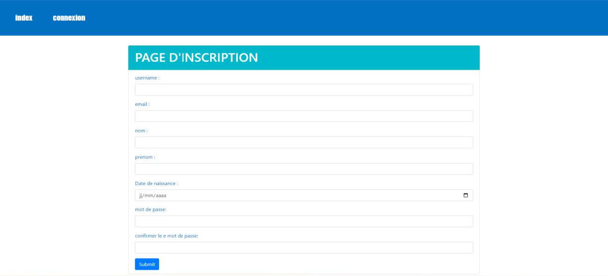

Forum Of Discussions for Students
simple and util website

simple and util website
L'évolution des technologies de I 'information et de la communication est à l'origine du regain de la notion de système d'information. Le média internet se révèle pratique pour amorcer un dialogue entre les membres d'un Université. Le projet qu'on présente, qui s'inscrit dans le cadre de notre projet académique de plateforme de développement, aborde précisément un système qui permet de faciliter la recherche des solutions à des problèmes bien déterminés et cela sous forme de forum.

Cette page offre à l’utilisateur la possiblité de s’inscrire dans notre application
L’interface d’authentification est une interface très importante dans l’application, car chaque utilisateur doit être enregistré dans notre système pour qu’il puisse profiter des fonctionnalités de notre application

Dans cette page l’utilisateur peut choisi la catégorie dans laquelle il veut poser une question

Dans cette page l'utilisateur peut consulter les questions et les réponses posées une nouvelle question, poser une réponse dans une question déjà pose, filtrer les questions selon les sous-catégories , rechercher une question dans les questions pose, voir ses donnes ou bien se déconnecter

Dans cette page l’utilisateur va remplir le formulaire de question en spécifiant la sous-catégorie

Dans cette page l’utilisateur peut consulter les réponses et aller la page de l’ajoute d’une réponse

Dans cette page l'utlisateur peut remplir le contenu de la formulaire de reponse